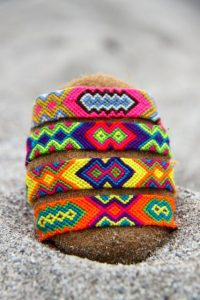
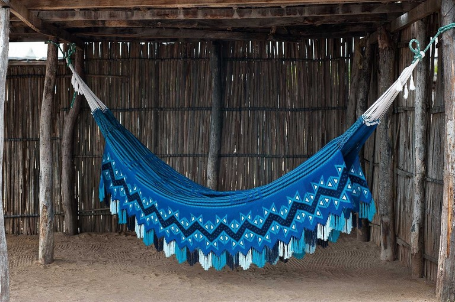

Galería de Artesanías

Mochila con patrón de tortuga ancestral - símbolo de protección.

Manillas de colores vivos - símbolo de esperanza

chinchorro color cielo mezclado con negro - simbolo de espiritualidad.